Parameters
Parameters
Temperature
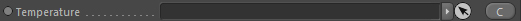
Takes a scalar channel that contains temperature information. This node is required.
Smoke
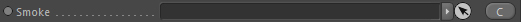
Takes a scalar channel that takes smoke/soot information. This node is optional. If not linked no soot will be generated.
Fire
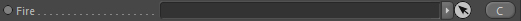
Takes a fire channel that contains burning information. This node is required.
The fire channel's 'Cooling Point', Flames Lifetime and Flames Afterlife settings are used in the simple fire combustion model.
Fuel
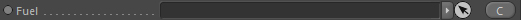
Takes a scalar channel that contains fuel information. This node is optional.
By linking a channel here you automatically switch the internal algorithm to a fuel-based combustion model. If it is not linked
the normal fire model is used (see top for a description).
Fluid Dynamics (Expansion)
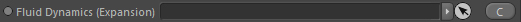
Takes a fluid dynamics node to emit pressure into resulting in expansion. This node is optional.
Mode
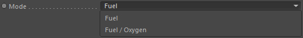
Only available if a fuel channel is linked. Defines which fuel combustion model to use (see top for a description).
Fuel
Fuel / Oxygen
Burning Rate [/sec]
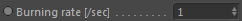
Defines how fast the fuel is burnt away. Automatically results in higher emissions of temperature, soot and expansion.
The burning rate is per second and can also be higher than 1.0.
Stoichiometric mixture
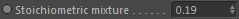
Only available if Mode is set to 'Fuel / Oxygen'.
Defines the a fuel to oxygen (air) ratio that must be available in a grid cell in order to let combustion take place.
Ignition Temperature [kelvin]
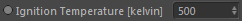
This is only used if no fuel channel is linked (so only in the simple fire combustion model). If you have a fuel channel, then the channels ignition temperature is used instead.
The ignition temperature is the temperature that must be reached before the fire starts to burn.
Sensible values here range from 400 to 1000 kelvin (taking real world fuels as reference).
In the simple fire mode however you directly emit flames into the fire channel and this then defines the minimum temperature written.
Temperature Emission [kelvin]
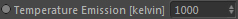
(only available in fuel mode)
How much temperature is generated during combustion. Given in kelvin.
Temperature (fire lifetime)

(only available in the simple combustion (non-fuel) mode)
Defines a procedural temperature rising profile (curve range is from ignition temperature to cooling point).
The duration of this range is defined by the 'Flames Lifetime' setting of the linked fire channel.
Soot Emission [density/sec]
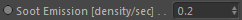
How much soot is generated per second during combustion (only used if a smoke channel is linked).
Soot Emission (fire lifetime)
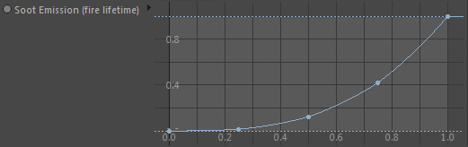
Defines a procedural smoke emission profile (curve range is from ignition temperature to cooling point).
The duration of this range is defined by the 'Flames Lifetime' setting of the linked fire channel.
Usually soot emission is highest when the fire dies off (so at the cooling point and right side of the curve).
Expansion [/sec]
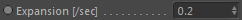
How much pressure is generated per second during combustion (only used if a fluid dynamics node is linked).
This results in expanding motion and is a key value for explosions.